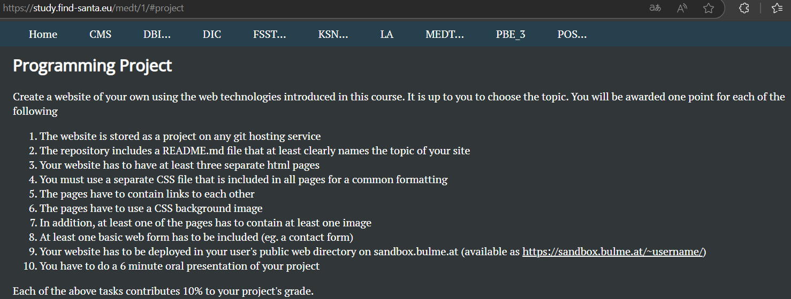

Auftrag 1
Seite basierend auf md, jekyll und git.
Beschreibung
Seite basierend auf md, jekyll und git. Auch dieser Projektauftrag kam von Gerald. Anforderung war eine Seite unter Verwendung von MarkDown-Language und eines Jekyll-Themes zu erstellen. Diese sollte sodann als persoenliche GitHub-Seite verwendet werden.
Auftrag 2
Der Auftrag ein Projekt mit 11ty und autodeploy on git push zu erstellen kam von Gerald.
Beschreibung
Weinpraesentation in 11ty & Nunjucks. Der Auftrag ein Projekt mit 11ty und autodeploy on git push zu erstellen kam von Gerald. Da fuer unser gemeinsames Weinproduktions-Projekt ohnedies (aus Zeitmangel) noch keine Seite existierte habe ich dies zum Anlass genommen dies als Projekt zu verwenden. Eines muss ich dazu sagen … 11ty (Node.js) ist sehr vielfaeltig und echt schnell - fuer Anfaenger wuerde ich es allerdings nicht empfehlen da selbst ich Unmengen an Zeit fuer Recherche aufwenden musste. Einzelne node_modules sind fehlerhaft, schlecht bis gar nicht dokumentiert und haben gravierende Versionskonflikte.
Auftrag 3
Der Auftrag ist hier nachzulesen.
Beschreibung
Es handelt sich um diese Seite.